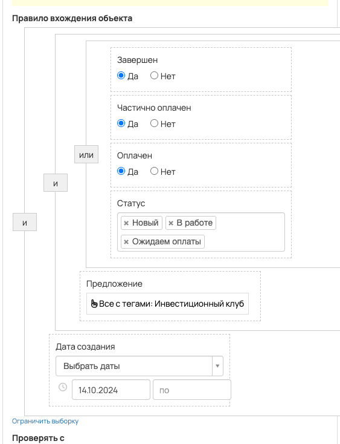
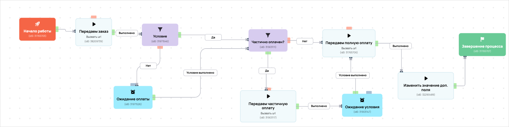

[AMO] Оплатил инвест клуб, передача в амо
- ID процесса:
1823882 - Объект: Заказы
- Статус: Ожидание событий
Описание из GetCourse
30.06.2026. Подробный ход процесса GetCourse:
Главное: В процесс попадают заказы по всем предложениям с тегом «ИК-АМО».
Процесс работает с объектом GetCourse: Заказы. Текущий статус процесса: Ожидание событий.
Как идет процесс внутри GetCourse:
- Схема состоит из 25 блоков и 35 переходов.
Конец подробного хода процесса GetCourse.
База - https://vakas-tools.ru/account/base/amo.php?base_id=60359
Воронка Инвест Клуб https://investorpractic.amocrm.ru/leads/pipeline/9500418 Название: Название предложения Тег: -
Новый заказ в гк - этап "Новый заказ" Ч/о в гк - этап "Частично оплачен" полная оплата в гк - этап "Успешно Реализовано"
Все заказы с инвест клубом. Частичный или оплаченный. Если частичный то ожидаем полную оплату. Если полная то завершаем процесс. В частичной или полной оплате проходя так же отправка в амо на нужные этапы
Понятное описание процесса
- Процесс работает с объектом GetCourse: Заказы. Текущий статус процесса: Ожидание событий.
- На вход попадают данные так: В процесс попадают заказы по всем предложениям с тегом «ИК-АМО».
- Техническое правило входа в GetCourse: Завершен (да) или Частично оплачен (да) или Оплачен (да) или Статус (ID: new, in_work, payment_waiting) и Предложение (все с тегами: ИК-АМО) и Дата создания (дата: 14.10.2024 - ...).
- Внутри схемы есть дополнительные проверки/ожидания: 4. Основные блоки: «Частично оплачен?»; «Ожидание условия»; «Ожидание оплаты»; «Условие».
- Дальше процесс делает прямые вызовы Vakas: 3. Напрямую задействованы базы: 60359.
- Передача: 60359. Оплатил инвест клуб, передача в амо: Оплаты и заказы. Передаются параметры:
number,id,order_id,positions,costMoney,leftCostMoney,payedMoney,status,paymentLink,firstNameи другие. - Что происходит в amoCRM: На входе в этап ИНВЕСТ КЛУБ -> НОВЫЙ ЗАКАЗ [75971310] база ищет дубль и может взять старую сделку только из заранее разрешенных этапов.
Ход процесса в GetCourse
- Схема состоит из 25 блоков и 35 переходов.
- По типам: стартов 1, условий/ожиданий 4, вызовов URL 5, изменений полей 7, финалов 1.
Блоки процесса: что делают и зачем нужны:
- Блок
31765703«Начало работы» (старт). Что делает: Запускает выполнение схемы для объекта, который попал под правило входа процесса. Зачем нужен: Нужен как точка входа: от него GetCourse начинает движение объекта по схеме. Дальше: если результат «Выполнено», идет в «Передаем заказ». - Блок
38209739«Передаем заказ» (вызов URL). Что делает: Передает в Vakas: 60359. Оплатил инвест клуб, передача в амо, канал «Оплаты и заказы» (GET); параметры:number,id,order_id,positions,costMoney,leftCostMoney,payedMoney,status,paymentLink,firstName,lastName,name,email,phoneи другие; timeout 300 сек. Зачем нужен: Нужен, чтобы передать подходящий объект в 60359. Оплатил инвест клуб, передача в амо; дальше На входе в этап ИНВЕСТ КЛУБ -> НОВЫЙ ЗАКАЗ [75971310] база ищет дубль и может взять старую сделку только из заранее разрешенных этапов. Дальше: если результат «Ошибка», идет в «n8n fail после Передаем заказ»; если результат «Выполнено», идет в «n8n success после Передаем заказ». - Блок
43516746«n8n success после Передаем заказ» (вызов URL). Что делает: Вызывает внешний URL: testn8n.easydrafting.ru/webhook/gc-vakas-retry-events (POST); параметры:event,clientED,gcDomain,action,process_id,process_name,entity_type,object_id,order_id,user_id,name,email,phone,error_message; timeout 10 сек. Зачем нужен: Нужен, чтобы процесс GetCourse передал данные во внешний сервис testn8n.easydrafting.ru. Дальше: если результат «Ошибка», идет в «ласт база»; если результат «Выполнено», идет в «ласт база». - Блок
43037061«ласт база» (изменение поля). Что делает: меняет полеvakas(Установить равным). значение: 60359 Зачем нужен: Нужен, чтобы записать внутри GetCourse технический признак/значение, которое потом используется в передаче или логике ветвления. Дальше: если результат «Выполнено», идет в «error_vakas 0». - Блок
43431479«error_vakas 0» (изменение поля). Что делает: меняет полеerror_vakas(Установить равным). значение: 0 Зачем нужен: Нужен, чтобы записать внутри GetCourse технический признак/значение, которое потом используется в передаче или логике ветвления. Дальше: если результат «Выполнено», идет в «Условие». - Блок
31971546«Условие» (условие). Что делает: Проверяет ветвление «Условие», но текст условия в дампе не расшифрован. Зачем нужен: Нужен, чтобы разделить поток: подходящих пользователей/заказы отправить дальше, неподходящих перевести на другую ветку или завершить. Дальше: если результат «Нет», идет в «Ожидание оплаты»; если результат «Да», идет в «Частично оплачен?». - Блок
31903111«Частично оплачен?» (условие). Что делает: Проверяет ветвление «Частично оплачен?», но текст условия в дампе не расшифрован. Зачем нужен: Нужен, чтобы разделить поток: подходящих пользователей/заказы отправить дальше, неподходящих перевести на другую ветку или завершить. Дальше: если результат «Нет», идет в «Передаем полную оплату»; если результат «Да», идет в «Передаем частичную оплату». - Блок
31903117«Передаем частичную оплату» (вызов URL). Что делает: Передает в Vakas: 60359. Оплатил инвест клуб, передача в амо, канал «Оплаты и заказы» (GET); параметры:number,id,order_id,positions,costMoney,leftCostMoney,payedMoney,status,paymentLink,firstName,lastName,name,email,phoneи другие; timeout 300 сек. Зачем нужен: Нужен, чтобы передать подходящий объект в 60359. Оплатил инвест клуб, передача в амо; дальше На входе в этап ИНВЕСТ КЛУБ -> НОВЫЙ ЗАКАЗ [75971310] база ищет дубль и может взять старую сделку только из заранее разрешенных этапов. Дальше: если результат «Ошибка», идет в «n8n fail после Передаем частичную оплату»; если результат «Выполнено», идет в «n8n success после Передаем частичную оплату». - Блок
43516825«n8n success после Передаем частичную оплату» (операция). Что делает: Выполняет служебный шаг схемы «n8n success после Передаем частичную оплату». Зачем нужен: Нужен как промежуточный технический шаг в схеме «n8n success после Передаем частичную оплату». Дальше: если результат «Ошибка», идет в «Ожидание условия»; если результат «Выполнено», идет в «Ожидание условия». - Блок
31903147«Ожидание условия» (ожидание условия). Что делает: Останавливает объект в ожидании нужного условия; точная формула в дампе не расшифрована. Зачем нужен: Нужен, чтобы не отправлять объект раньше времени: процесс ждет нужное событие, заказ, сегмент или другое условие. Дальше: если результат «Условие выполнено», идет в «Передаем полную оплату». - Блок
31765706«Передаем полную оплату» (вызов URL). Что делает: Передает в Vakas: 60359. Оплатил инвест клуб, передача в амо, канал «Оплаты и заказы» (GET); параметры:number,id,order_id,positions,costMoney,leftCostMoney,payedMoney,status,paymentLink,firstName,lastName,name,email,phoneи другие; timeout 300 сек. Зачем нужен: Нужен, чтобы передать подходящий объект в 60359. Оплатил инвест клуб, передача в амо; дальше На входе в этап ИНВЕСТ КЛУБ -> НОВЫЙ ЗАКАЗ [75971310] база ищет дубль и может взять старую сделку только из заранее разрешенных этапов. Дальше: если результат «Ошибка», идет в «n8n fail после Передаем полную оплату»; если результат «Выполнено», идет в «n8n success после Передаем полную оплату». - Блок
43516791«n8n success после Передаем полную оплату» (операция). Что делает: Выполняет служебный шаг схемы «n8n success после Передаем полную оплату». Зачем нужен: Нужен как промежуточный технический шаг в схеме «n8n success после Передаем полную оплату». Дальше: если результат «Ошибка», идет в «Изменить значение доп. поля»; если результат «Выполнено», идет в «Изменить значение доп. поля». - Блок
32290489«Изменить значение доп. поля» (изменение поля). Что делает: меняет полеПередан в АМО(Установить равным). значение: 1 Зачем нужен: Нужен, чтобы записать внутри GetCourse технический признак/значение, которое потом используется в передаче или логике ветвления. Дальше: если результат «Выполнено», идет в «error_vakas 0». - Блок
43431526«error_vakas 0» (изменение поля). Что делает: меняет полеerror_vakas(Установить равным). значение: 0 Зачем нужен: Нужен, чтобы записать внутри GetCourse технический признак/значение, которое потом используется в передаче или логике ветвления. Дальше: если результат «Выполнено», идет в «Завершение процесса». - Блок
31765707«Завершение процесса» (завершение). Что делает: Завершает ветку процесса после выполненных проверок и действий. Зачем нужен: Нужен, чтобы закрыть текущую ветку и не гонять объект по процессу повторно. Дальше переходов нет: это конечная точка ветки. - Блок
43516795«n8n fail после Передаем полную оплату» (операция). Что делает: Выполняет служебный шаг схемы «n8n fail после Передаем полную оплату». Зачем нужен: Нужен как промежуточный технический шаг в схеме «n8n fail после Передаем полную оплату». Дальше: если результат «Ошибка», идет в «error_vakas 1»; если результат «Выполнено», идет в «error_vakas 1». - Блок
43431514«error_vakas 1» (изменение поля). Что делает: меняет полеerror_vakas(Установить равным). значение: 1 Зачем нужен: Нужен, чтобы записать внутри GetCourse технический признак/значение, которое потом используется в передаче или логике ветвления. Дальше: если результат «Выполнено», идет в «Задержка». - Блок
43431515«Задержка» (таймер). Что делает: Делает паузу или ждет заданное время перед следующим шагом. Зачем нужен: Нужен для задержки между проверкой и передачей, чтобы данные успели появиться или чтобы соблюсти нужный порядок обработки. Дальше: если результат «Выполнено», идет в «Частично оплачен?». - Блок
43516848«n8n fail после Передаем частичную оплату» (операция). Что делает: Выполняет служебный шаг схемы «n8n fail после Передаем частичную оплату». Зачем нужен: Нужен как промежуточный технический шаг в схеме «n8n fail после Передаем частичную оплату». Дальше: если результат «Ошибка», идет в «error_vakas 1»; если результат «Выполнено», идет в «error_vakas 1». - Блок
43431521«error_vakas 1» (изменение поля). Что делает: меняет полеerror_vakas(Установить равным). значение: 1 Зачем нужен: Нужен, чтобы записать внутри GetCourse технический признак/значение, которое потом используется в передаче или логике ветвления. Дальше: если результат «Выполнено», идет в «Задержка». - Блок
43431522«Задержка» (таймер). Что делает: Делает паузу или ждет заданное время перед следующим шагом. Зачем нужен: Нужен для задержки между проверкой и передачей, чтобы данные успели появиться или чтобы соблюсти нужный порядок обработки. Дальше: если результат «Выполнено», идет в «Частично оплачен?». - Блок
31971526«Ожидание оплаты» (ожидание условия). Что делает: Останавливает объект в ожидании нужного условия; точная формула в дампе не расшифрована. Зачем нужен: Нужен, чтобы не отправлять объект раньше времени: процесс ждет нужное событие, заказ, сегмент или другое условие. Дальше: если результат «Условие выполнено», идет в «Частично оплачен?». - Блок
43516753«n8n fail после Передаем заказ» (вызов URL). Что делает: Вызывает внешний URL: testn8n.easydrafting.ru/webhook/gc-vakas-retry-events (POST); параметры:event,clientED,gcDomain,action,process_id,process_name,entity_type,object_id,order_id,user_id,name,email,phone,error_message; timeout 10 сек. Зачем нужен: Нужен, чтобы процесс GetCourse передал данные во внешний сервис testn8n.easydrafting.ru. Дальше: если результат «Ошибка», идет в «error_vakas 1»; если результат «Выполнено», идет в «error_vakas 1». - Блок
43431446«error_vakas 1» (изменение поля). Что делает: меняет полеerror_vakas(Установить равным). значение: 1 Зачем нужен: Нужен, чтобы записать внутри GetCourse технический признак/значение, которое потом используется в передаче или логике ветвления. Дальше: если результат «Выполнено», идет в «Задержка». - Блок
43431482«Задержка» (таймер). Что делает: Делает паузу или ждет заданное время перед следующим шагом. Зачем нужен: Нужен для задержки между проверкой и передачей, чтобы данные успели появиться или чтобы соблюсти нужный порядок обработки. Дальше: если результат «Выполнено», идет в «Начало работы».
Скриншоты процесса


Откуда: процесс берет заказы по предложениям с тегами: Инвестиционный клуб; со статусами: Новый, В работе, Ожидаем оплаты; с признаками: завершен, частично оплачен, оплачен; с отбором по дате создания; создан с 14.10.2024. Полное правило показано на скриншоте ниже.
Что проверяет по пути: Частично оплачен?, Ожидание условия, Ожидание оплаты.
Куда ведет: вызывает внешние URL: Передаем полную оплату, Передаем частичную оплату, Передаем заказ; обновляет доп. поля GetCourse (1 разных действий); ждет выполнения условий: Ожидание условия, Ожидание оплаты.
Логика Vakas и amoCRM
- Условие входа в процесс: Завершен (да) или Частично оплачен (да) или Оплачен (да) или Статус (ID: new, in_work, payment_waiting) и Предложение (все с тегами: ИК-АМО) и Дата создания (дата: 14.10.2024 - ...).
- Вызовов Vakas в схеме:
3. Уникальных URL Vakas:1. Связанных баз:1.
Связанная база Vakas: 60359. Оплатил инвест клуб, передача в амо
- Использование в процессе: Оплаты и заказы
- Документация базы: 60359. Оплатил инвест клуб, передача в амо
- Страница настройки: Vakas
- Поиск дублей: Проверять на дубли
- Искать только в выбранных воронках: 12
- Ответственный по контакту имеет приоритет: Да
Вызовы из процесса
payments: Передаем полную оплату / Передаем частичную оплату / Передаем заказ
- Endpoint:
payments - URL вызова:
https://vakas-tools.ru/base/payments/8927217/60359/?number={object.number}&id={object.user.id}&order_id={object.id}&positions={object.positions}&costMoney={object.cost_money}&leftCostMoney={object.left_cost_money}&payedMoney={object.payed_money}&status={object.status}&paymentLink={object.payment_link}&firstName={object.user.first_name}&lastName={object.user.last_name}&name={object.user.name}&email={object.user.email}&phone={object.user.phone}&manager_name={object.manager}&manager_email={object.manager_email}&manager_phone={object.manager_phone}&offers={object.offers}&avatarUrl={object.user.avatar_url}&utmS={object.user.create_session.utm_source}&utmM={object.user.create_session.utm_medium}&utmCa={object.user.create_session.utm_campaign}&utmCo={object.user.create_session.utm_content}&utmT={object.user.create_session.utm_term}&data_paid={today}&utm_source={object.deal_utm_source}&utm_medium={object.deal_utm_medium}&utm_campaign={object.deal_utm_campaign}&utm_content={object.deal_utm_content}&utm_term={object.deal_utm_term} - Связанная база Vakas: 60359. Оплатил инвест клуб, передача в амо
- В схеме этот же URL вызывается из блоков:
Передаем полную оплату,Передаем частичную оплату,Передаем заказ
Когда срабатывает в процессе
- Блок
Передаем полную оплату, сценарий 1:Начало работы--Выполнено-->Передаем заказ--Выполнено-->n8n success после Передаем заказ--Ошибка-->ласт база--Выполнено-->error_vakas 0--Выполнено-->Условие--Нет-->Ожидание оплаты--Условие выполнено-->Частично оплачен?--Нет-->Передаем полную оплату- условие
Условие: условие без текстовой расшифровки ->Нет - ожидание
Ожидание оплаты: условие ожидания без текстовой расшифровки ->Условие выполнено - условие
Частично оплачен?: условие без текстовой расшифровки ->Нет
- условие
- Блок
Передаем полную оплату, сценарий 2:Начало работы--Выполнено-->Передаем заказ--Выполнено-->n8n success после Передаем заказ--Ошибка-->ласт база--Выполнено-->error_vakas 0--Выполнено-->Условие--Нет-->Ожидание оплаты--Условие выполнено-->Частично оплачен?--Да-->Передаем частичную оплату--Выполнено-->n8n success после Передаем частичную оплату--Ошибка-->Ожидание условия--Условие выполнено-->Передаем полную оплату- условие
Условие: условие без текстовой расшифровки ->Нет - ожидание
Ожидание оплаты: условие ожидания без текстовой расшифровки ->Условие выполнено - условие
Частично оплачен?: условие без текстовой расшифровки ->Да - ожидание
Ожидание условия: условие ожидания без текстовой расшифровки ->Условие выполнено
- условие
- Блок
Передаем полную оплату, сценарий 3:Начало работы--Выполнено-->Передаем заказ--Выполнено-->n8n success после Передаем заказ--Ошибка-->ласт база--Выполнено-->error_vakas 0--Выполнено-->Условие--Нет-->Ожидание оплаты--Условие выполнено-->Частично оплачен?--Да-->Передаем частичную оплату--Выполнено-->n8n success после Передаем частичную оплату--Выполнено-->Ожидание условия--Условие выполнено-->Передаем полную оплату- условие
Условие: условие без текстовой расшифровки ->Нет - ожидание
Ожидание оплаты: условие ожидания без текстовой расшифровки ->Условие выполнено - условие
Частично оплачен?: условие без текстовой расшифровки ->Да - ожидание
Ожидание условия: условие ожидания без текстовой расшифровки ->Условие выполнено
- условие
- Блок
Передаем полную оплату, сценарий 4:Начало работы--Выполнено-->Передаем заказ--Выполнено-->n8n success после Передаем заказ--Ошибка-->ласт база--Выполнено-->error_vakas 0--Выполнено-->Условие--Да-->Частично оплачен?--Нет-->Передаем полную оплату- условие
Условие: условие без текстовой расшифровки ->Да - условие
Частично оплачен?: условие без текстовой расшифровки ->Нет
- условие
- Блок
Передаем полную оплату, сценарий 5:Начало работы--Выполнено-->Передаем заказ--Выполнено-->n8n success после Передаем заказ--Ошибка-->ласт база--Выполнено-->error_vakas 0--Выполнено-->Условие--Да-->Частично оплачен?--Да-->Передаем частичную оплату--Выполнено-->n8n success после Передаем частичную оплату--Ошибка-->Ожидание условия--Условие выполнено-->Передаем полную оплату- условие
Условие: условие без текстовой расшифровки ->Да - условие
Частично оплачен?: условие без текстовой расшифровки ->Да - ожидание
Ожидание условия: условие ожидания без текстовой расшифровки ->Условие выполнено
- условие
- Блок
Передаем полную оплату, сценарий 6:Начало работы--Выполнено-->Передаем заказ--Выполнено-->n8n success после Передаем заказ--Ошибка-->ласт база--Выполнено-->error_vakas 0--Выполнено-->Условие--Да-->Частично оплачен?--Да-->Передаем частичную оплату--Выполнено-->n8n success после Передаем частичную оплату--Выполнено-->Ожидание условия--Условие выполнено-->Передаем полную оплату- условие
Условие: условие без текстовой расшифровки ->Да - условие
Частично оплачен?: условие без текстовой расшифровки ->Да - ожидание
Ожидание условия: условие ожидания без текстовой расшифровки ->Условие выполнено
- условие
- Блок
Передаем полную оплату, сценарий 7:Начало работы--Выполнено-->Передаем заказ--Выполнено-->n8n success после Передаем заказ--Выполнено-->ласт база--Выполнено-->error_vakas 0--Выполнено-->Условие--Нет-->Ожидание оплаты--Условие выполнено-->Частично оплачен?--Нет-->Передаем полную оплату- условие
Условие: условие без текстовой расшифровки ->Нет - ожидание
Ожидание оплаты: условие ожидания без текстовой расшифровки ->Условие выполнено - условие
Частично оплачен?: условие без текстовой расшифровки ->Нет
- условие
- Блок
Передаем полную оплату, сценарий 8:Начало работы--Выполнено-->Передаем заказ--Выполнено-->n8n success после Передаем заказ--Выполнено-->ласт база--Выполнено-->error_vakas 0--Выполнено-->Условие--Нет-->Ожидание оплаты--Условие выполнено-->Частично оплачен?--Да-->Передаем частичную оплату--Выполнено-->n8n success после Передаем частичную оплату--Ошибка-->Ожидание условия--Условие выполнено-->Передаем полную оплату- условие
Условие: условие без текстовой расшифровки ->Нет - ожидание
Ожидание оплаты: условие ожидания без текстовой расшифровки ->Условие выполнено - условие
Частично оплачен?: условие без текстовой расшифровки ->Да - ожидание
Ожидание условия: условие ожидания без текстовой расшифровки ->Условие выполнено
- условие
- Блок
Передаем частичную оплату, сценарий 1:Начало работы--Выполнено-->Передаем заказ--Выполнено-->n8n success после Передаем заказ--Ошибка-->ласт база--Выполнено-->error_vakas 0--Выполнено-->Условие--Нет-->Ожидание оплаты--Условие выполнено-->Частично оплачен?--Да-->Передаем частичную оплату- условие
Условие: условие без текстовой расшифровки ->Нет - ожидание
Ожидание оплаты: условие ожидания без текстовой расшифровки ->Условие выполнено - условие
Частично оплачен?: условие без текстовой расшифровки ->Да
- условие
- Блок
Передаем частичную оплату, сценарий 2:Начало работы--Выполнено-->Передаем заказ--Выполнено-->n8n success после Передаем заказ--Ошибка-->ласт база--Выполнено-->error_vakas 0--Выполнено-->Условие--Да-->Частично оплачен?--Да-->Передаем частичную оплату- условие
Условие: условие без текстовой расшифровки ->Да - условие
Частично оплачен?: условие без текстовой расшифровки ->Да
- условие
- Блок
Передаем частичную оплату, сценарий 3:Начало работы--Выполнено-->Передаем заказ--Выполнено-->n8n success после Передаем заказ--Выполнено-->ласт база--Выполнено-->error_vakas 0--Выполнено-->Условие--Нет-->Ожидание оплаты--Условие выполнено-->Частично оплачен?--Да-->Передаем частичную оплату- условие
Условие: условие без текстовой расшифровки ->Нет - ожидание
Ожидание оплаты: условие ожидания без текстовой расшифровки ->Условие выполнено - условие
Частично оплачен?: условие без текстовой расшифровки ->Да
- условие
- Блок
Передаем частичную оплату, сценарий 4:Начало работы--Выполнено-->Передаем заказ--Выполнено-->n8n success после Передаем заказ--Выполнено-->ласт база--Выполнено-->error_vakas 0--Выполнено-->Условие--Да-->Частично оплачен?--Да-->Передаем частичную оплату- условие
Условие: условие без текстовой расшифровки ->Да - условие
Частично оплачен?: условие без текстовой расшифровки ->Да
- условие
- Блок
Передаем заказ, сценарий 1:Начало работы--Выполнено-->Передаем заказ
Что уходит в Vakas
<details> <summary>Показать 30 параметров запроса</summary>
numberidorder_idpositionscostMoneyleftCostMoneypayedMoneystatuspaymentLinkfirstNamelastNamenameemailphonemanager_namemanager_emailmanager_phoneoffersavatarUrlutmSutmMutmCautmCoutmTdata_paidutm_sourceutm_mediumutm_campaignutm_contentutm_term
</details>
Как база обработает вызов и что будет в amoCRM
-
Логика создания сделки: сначала ищется существующая сделка/контакт по правилам базы; если подходящая сделка найдена, обновляется она, иначе создается новая.
-
Режим проверки дублей: Проверять на дубли
-
Искать дубль только в выбранных воронках: 12 шт.
-
Учитывать закрытые этапы при поиске дубля: нет
-
Добавлять телефон/email в найденный контакт: Нет
-
Менять имя контакта при обновлении: Нет <details> <summary>Показать 12 воронок для поиска дублей</summary>
-
ОСНОВНОЙ ОТДЕЛ - ЗАЯВКИ [6777466] -
ПАССИВНЫЙ ДОХОД [9426954] -
КРИПТОКАПИТАЛ [9498394] -
ФИНАНСОВАЯ СВОБОДА [9498398] -
ОД [9839030] -
КРИПТОКЛУБ [9578374] -
ИНВЕСТ КЛУБ [9500418] -
ОТДЕЛ КЛУБОВ [6869966] -
АПСЕЙЛЫ ОП [8910882] -
ОТДЕЛ ДИАГНОСТИК [6844390] -
ЛИДОРУБЫ [9212986] -
ДИАГНОСТЫ [9213518]
</details>
- Автоотправка оплат в amoCRM: Да
- Базовый этап для этого вызова: определяется по типу оплаты
- Новый заказ: ИНВЕСТ КЛУБ -> НОВЫЙ ЗАКАЗ [75971310]
- Частичная оплата: ИНВЕСТ КЛУБ -> Частично оплачен [76137958]
- Полная оплата: [В той воронке где находится лид] - Успешно реализовано [-142]
- Поле amoCRM для суммы: оплачено[payedMoney]
- Двигать старые сделки только с выбранных этапов: Да
- Этапы, из которых разрешен сдвиг: 90 этапов
- Не менять этап при обновлении: Нет
- Менять название сделки при обновлении: Да
- Теги сделки: не заданы
- Ответственный по умолчанию: EasyDrafting[12985298]
- Индивидуальные правила маршрутизации: нет